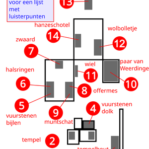
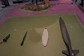
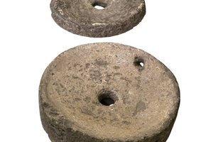
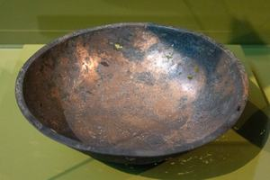

Sacrificial treasures
Choose your language: Nederlands English Deutsch
In this exhibition, we are displaying a variety of artifacts found in the peatlands in and around Twente. These “sacrificial treasures,” which were likely valuable at the time, were probably offered to the gods to win their favor and protect the people from disasters.
Listening points on this tour
-
 Route to sacrificial treasures
Route to sacrificial treasures -

Map of offering treasures -
 1. Welcome
1. Welcome -
2. Replica of the Bargeroosterveld Temple ca. 1500-1250 BC.
-
 3. Wooden parts for the little temple
3. Wooden parts for the little temple -

4. Flint dagger from Bruinehaar-Lokbelt (near Haaksbergen), ca. 11,000–3,000 BCE -
 5. Three large flint axes from Collendoorn near Hardenberg (ca. 3450–2750 B.C.)
5. Three large flint axes from Collendoorn near Hardenberg (ca. 3450–2750 B.C.) -
 6. Four gold neck rings from Olst (Late Roman period, ca. 400 AD)
6. Four gold neck rings from Olst (Late Roman period, ca. 400 AD) -
 7. Ommerschans Sword (Middle Bronze Age, ca. 1400 B.C.)
7. Ommerschans Sword (Middle Bronze Age, ca. 1400 B.C.) -
 8 Bronze sacrificial knife from Daarlerveen/Vroomshoop (c. 1200–800 BCE)
8 Bronze sacrificial knife from Daarlerveen/Vroomshoop (c. 1200–800 BCE) -
 9. Hezingen Coin Hoard (590–700 AD)
9. Hezingen Coin Hoard (590–700 AD) -
 10. The Weerdinge couple
10. The Weerdinge couple -
 11. The wooden disc wheel from Steenwijk, ca. 2280–2130 BCE
11. The wooden disc wheel from Steenwijk, ca. 2280–2130 BCE -
 12. Ball of wool from Roswinkel, ca. 800–600 BC
12. Ball of wool from Roswinkel, ca. 800–600 BC -

13. Millstones from Haaksbergen. ca. 100 AD -

14. Copper Hanseatic dish with an engraving of Humilitas (ca. 1200 AD) -
 15. In conclusion
15. In conclusion